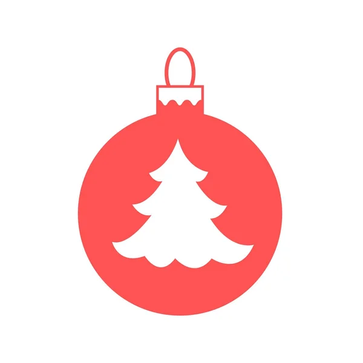

🎄 Úvodní lekce
Jak se odkoulovávat?
Potřebuji prožívat...?
Jsem ochotna to propustit?
Teď a tady?
Na všech úrovních bytí?
Vše proměnit na lásku?
Nechť se tak stane, děkuji.
Všechny tyto programy měním na lásku a s láskou je vracím všem autorům zpět.
 Kuličky (40)
- strach ze změny
- přesvědčení, že si nedokážu pomoci sama
- nedůvěru v sebe, že můžu cokoliv změnit
- přesvědčení, že každá změna je jen na chvilku
- prahnutí po dokonalosti
- zákaz přijímat pomoc
- trapnost v požádání o pomoc
- boj s časem
- marnivost svého života
- bezohlednost sama k sobě
- zmítání se v pochybnostech
- to, že dáváš sebe na poslední místo
- těžké průběhy situací
- marnivost svého času
- odkládání svého života na potom
- promarněnost vlastních příležitostí
- ztrátu naděje na pěkný život
- roli oběti
- život v sebelítosti
- nepochopení sama sebe
- nepochopení druhých
- bezohlednost ve vztazích
- sebezpůsobování
- strach vzdát se iluzí
- život v iluzích
- chaos ve vztahu sama k sobě
- přebírání zodpovědnosti za druhé
- strach vidět pravdu
- potřebu zraňovat
- závislost na názoru druhých o mně
- přesvědčení o vlastní slabosti
- život v manipulaci
- strach z projevování vlastních citů a pocitů
- zákaz prožívání svých emocí, citů a pocitů
- zbabělost
- přesvědčení, že život není fér
- nenávist sama k sobě
- nenávist k rodičům
- nenávist k dětem
- nenávist k životu
🎄Lekce 1 - Emoční prožitky
Témata k zamyšlení
- TRAUMATA
- TRAUMA V REALITĚ
- ODKOULOVÁVACÍ PYRAMIDA
- HÁDKA RODIČŮ
- PYRAMIDA – OTEC
- PYRAMIDA – MATKA
- PYRAMIDA – SYN
- PYRAMIDA – DCERA
Kuličky (75)
- zajetí v traumatu děsivé události
- zhroucení mého systému života
- strach ze smrti
- pocit ohrožení života
- život jako jedno velké utrpení
- velký strach o svou existenci
- strach o život svých blízkých
- strach z promarnění životních příležitostí
- sebevražedné sklony a myšlenky
- sebepoškozování
- záchvaty vzteku
- bolestivé stavy panické ataky
- pocit hrozící smrti
- pocit hrozícího konce
- předurčení k zániku
- žít jako pohřbena zaživa
- vyhledávání nebezpečných situací
- nesnesitelné pocity a emoce
- naprostá nemohoucnost
- otupělá bolest způsobena zraněním
- semletí životem
- odvrácení se od sebe
- přesvědčení, že nic nezvládnu
- ztráta kontroly
- bolestné čelení realitě
- nepřetržitá ostražitost
- přehnané úlekové reakce
- pocit zastřené mysli
- zúžené vnímání
- otupělost
- útlum
- pomílené představy
- ustaranost o svou budoucnost
- zmítání se v pochybnostech
- sužování úzkostí
- život zastřen bolestí a smutkem
- extrémní strach a paniku
- ochromení mysli a emocí
- omezení schopnosti prožívat emoce
- podrážděnost
- posttraumatickou stresovou poruchu
- změnu osobnosti skrze traumata
- aby mne traumatizující zážitek překrýval aktuální realitu
- trvalé změny osobnosti díky stresu, strachu či traumatu
- vyhýbání se všemu, co je spojeno s traumatem
- mnohočetná porucha osobnosti
- podivínské a excentrické chování
- paranoiu
- zbytečnou afektovanost
- impulzivní chování
- neovladatelné výbuchy
- dramatické výstupy
- sklony k násilí
- stálé dělání si starostí
- bezmocné stavy
- přenášení psychického napětí na druhé / na okolí
- náchylnost k problémům
- chladnost a lhostejnost vůči ostatním
- neschopnost milovat
- otřesenost
- hluboká intenzita bolesti
- nedostatek citové náklonnosti
- apatické emoce
- apatický stav k životu
- zhroucení života ztrátou milované osoby
- zhroucení života skrze provinění
- jsem vinna a nezasloužím si nic dobrého
- skličující pocit provinění
- pocit, že jsem zničila život druhému člověku
- pocit, že jsem si zničila život
- skrze životní rozhodnutí
- syndrom zlomeného srdce
- sklíčený stav bezmoci
- celkové zhroucení organismu
- vyhořelost v životních situacích
🎄Lekce 2 - Vztah k sobě
Témata k zamyšlení
- PYRAMIDA – ZRCADLO
- SEBEHODNOTA
- nikdo si mě neváží
- nestojím za nic
- vše co udělám je k ničemu
- nemůžu být sama sebou
- nechápu co tu vlastně dělám
- je ze mě troska
- vše je to stejně moje vina
- KONTROLY PRAVIDLA
- PYRAMIDA – ZASLOUŽIT SI
- PYRAMIDA – NÁLEPKOVÁNÍ
(JAK MĚ VIDÍ DRUZÍ):
- dosáhnu vůbec něčeho
- jsem neschopný
- strach o finanční zajištění rodiny
- když to říkají druzí, tak takový musím být
- musím naplnit očekávání druhých
- zaslepení vůči svým vlastnostem
(KDO JSEM):
- jsem divná
- nikam nezapadám
- stejně to nemá smysl
- ospravedlňování svých činů a chování
- nikdy nedokážu, aby mě měli všichni rádi
- OTEC KUTIL
- PYRAMIDA – NÁLEPKOVÁNÍ
- MATKA MARNÁ
Kuličky (44)
- zbytečné prodlužování čehokoli
- odvrácení se od sebe a svých potřeb
- zvrácené chování
- převýchova druhých
- ztráta snění
- ztráta síly k plnění svých snů
- neudržení koncentrace
- stálé váhání a pochybnosti o sobě, zda dělám cokoli dobře
- nedokázání posunout myšlenky v konkrétní čin
- aby mne v čemkoli brzdila tréma
- být sražen/a na kolena
- strach z názorů druhých na mne
- zhnusení sám/sama sebou
- zhnusení chováním druhých
- soustředění se na své chyby, místo dobrých vlastností
- soustředění se na chyby druhých, místo na jejich dobré vlastnosti
- podlézání druhým, abych byl/a přijat/a
- žít stále v kompromisech
- přebírání řešení problémů druhých na sebe
- že mne nedokáže nikdo nahradit či zastoupit
- pocit, že jsem horší než ostatní lidé
- rozhodování pod stálým tlakem
- přesvědčení, že Tvá cesta / Tvůj život nikam nevede
- přesvědčení, že je sobecké myslet na sebe
- neochota změnit svůj přístup k životu
- neochota změnit svůj přístup k sobě a druhým
- přesvědčení, že na vše potřebuji schválení a potvrzení z okolí
- neschopnost dosahovat plnění svých přání
- strach z pohrdání od okolního světa
- pohrdání mým životem
- pohrdání sám/sama sebou
- být pro druhé přítěží
- mít v životě druhé lidi jako přítěž
- žít v přítěži života
- že postoj rodičů k životu je základ i mého postoje
- žít v domněnkách od druhých, jak má můj život vypadat
- žít v domněnkách, které mi brání udělat velká rozhodnutí
- zděděné emoční základy
- být nepoučitelný/á
- být nenapravitelný/á
- lézt někomu do zadku
- podlézat druhým, abych byl/a přijat/a
- nenávist k mému životu
- nenávist k na sobě, k mým rozhodnutím v životě
🎄Lekce 3 - Závislosti
Témata k zamyšlení
- NEMŮŽU BEZ TOHO ŽÍT
- DRUHY ZÁVISLOSTÍ
- zjevá
- skrytá
- příčina
- PŘEJÍMÁNÍ ZÁVISLOSTI - ZÁVISLOST NA JÍDLE
- PŘEJÍMÁNÍ ZÁVISLOSTI
- přesvědčení, že cokoli dělá taťka, tak to můžu dělat i já, protože to je v pořádku
- přesvědčení, že musím být jako on, abych se mu zalíbil
- přesvědčení, že abych byl přijat, musím napodobovat druhé
- ZÁVISLOST NA ÚKLIDU
- posedlost
- že nebudu spát dokud tu nebude pořádně uklizeno
- že nikdy není dostatečně uklizeno
- posedlost úklidem je silnější než já
- že stavím svou hodnotu na pořádku okolo sebe a mínění druhých
- NESCHOPNOST SE ODPOUTAT
- neochotu změnit své chování
- potlačování negativních vzpomínek
- podléhání manipulaci jiných osob
- rezignaci nad svým osudem ve vztahu
Kuličky (53)
- iluzi, že v životě nemáš žádnou závislost
- nepřipouštění si, že bys mohl/a být závislý/á
- přesvědčení, že obyčejné opakující se věci (bez kterých ale nemůžeš žít) nejsou závislost
- popírání důkazů o Tvé závislosti
- aby Tě závislost ovládala
- nedůvěru v sebe, že se dokážeš zbavit závislosti
- hledání viníků svých problémů v druhých
- ztrátu kontroly nad sebou, svým životem a svým chováním
- nepřínosná přesvědčení
- přesvědčení, že něco, co nebylo původně naprogramované pro přežití, je nyní pro Tebe přirozené, je to něco bez čeho nemůžeš žít
- libost v závislosti
- neochotu změnit své chování
- neschopnost mít v životě smysl a řád
- neschopnost uspořádat svůj život
- neschopnost akceptovat prospěšné chování
- přesvědčení, že skončit se závislostí je těžké – „je to nad mé síly"
- neuvěření v dobré trvalé změny
- začarovaný kruh závislosti
- změnu identity skrze jakoukoli závislost
- strach ze změny identity
- neschopnost a neochotu posoudit následky a dopady v budoucnosti
- zapomínat na negativní dopady svého závislostního chování
- přesvědčení, že život se závislostí je lepší a lehčí než bez ní
- upevňování závislosti skrze příjemný fyzický vjem
- že jsi otrokem závislosti
- přesvědčení, že Tě závislost obohacuje
- odpor k životu bez závislosti
- odpor k životu se závislostí
- neschopnost naplnit své předsevzetí
- podkopávání sám sebe / sebe samé
- přesvědčení, že stres a únava podporují závislostní chování
- že závislost Ti pomáhá utíkat od reality
- že Ti závislost pomáhá utéct od problémů, které nemůžeš vyřešit
- neschopnost vzdát se uklidňujícího efektu po užití drogy
- přesvědčení, že negativa abstinence převažují pozitiva
- přesvědčení, že život bez závislosti vede k nežádoucím fyzickým a psychickým reakcím
- vyhýbání se řešení nepříjemných situací
- neustálou touhu k závislostnímu chování
- podléhat neodolatelné touze
- neustálé nutkání k závislosti
- přesvědčení, že si skrze závislost kompenzuješ nedostatek lásky a přijetí v dětství
- přesvědčení, že není nic důležitějšího, než uspokojit touhu po droze
- neschopnost a neochotu poučit se z negativních důsledků závislosti
- neochotu a odpor udržovat a vytvářet si vlastní pravidla, která vedou k šťastnému a spokojenému životu bez závislosti
- že se necháš jednoduše zmanipulovat
- že jediná chvíle, kdy se cítíš být přijímaný druhými nebo sebou, je v době působení drogy
- že závislost je jediný zdroj odměny, jediná chvíle lásky
- si ničit život skrze závislost
- neschopnost, neochota a odmítání převzetí kontroly nad svou závislostí
- přijímat závislost druhých
- ovlivnění závislostí druhých
- rezignaci sám/samé nad sebou a svým životem
- destruktivní důsledky závislosti
🎄Lekce 4 - Skutečné bohatství
Témata k zamyšlení
- SKUTEČNÉ BOHATSTVÍ
- Prostor příznivý pro život (domov)
- Zdraví (fyzická a duševní spokojenost)
- Šťastná rodina (harmonické vztahy mezi rodiči a dětmi)
- Materiální blahobyt (dostatečné množství peněz)
- Příznivá vzájemná komunikace s lidmi (spolehliví a věrní přátelé, podobně smýšlející)
- Oblíbená činnost (přináší duševní a materiální uspokojení)
- MAJETNÝ X BOHATÝ
- BOHATSTVÍ RODIČŮ
- JÁ A SYSTÉM (vláda, politika, systém, daně)
- VNÍMÁNÍ BOHATÉHO ČLOVĚKA
- VNÍMÁNÍ CHUDÉHO ČLOVĚKA
- PENÍZE A STRACH
Kuličky (78)
- finanční nouzi
- uvěření v život v nouzi a nedostatku
- být smolařem
- přesvědčení, že vždycky prohraji
- přesvědčení, že peníze jsou zlo a prokleté
- přesvědčení, že peníze kazí charakter člověka
- přesvědčení, že peníze dělají veškeré zlo na světě
- neschopnost peníze přijmout do svého života
- odpor ke konání
- neschopnost vidět možnosti dalšího výdělku
- přesvědčení, že peníze jsou pokušení
- přesvědčení, že peníze dělají člověka špatným a lačným
- přesvědčení, že čím je člověk bohatší, tím je lačnější
- peníze smrdí
- přesvědčení, že poctivou prací nezbohatnu
- přesvědčení, že lidé nemají peníze
- přesvědčení, že peníze se vydělávají těžkou prací, potem a krví
- že vydělávání peněz je jen dřina
- odpor k přijímání peněz
- zákaz používat peníze pro realizaci svých úmyslů a záměrů
- tavení toku peněz do svého života
- nevědomost, jak peníze získávat a disponovat s nimi
- stagnace ve finančním vývoji
- vše, co mne brání využívat své bohatství ve svém životě
- přesvědčení, že s dospíváním dětí rostou výdaje
- podporování vlastní hlouposti a slabosti
- komplexy méněcennosti, když nemám velké bohatství
- přesvědčení, že jen peníze mne pomůžou k uskutečnění vlastních záměrů
- být otrokyní/otrokem peněz
- že mám peníze jako drogu
- strach z nízkého platu
- strach z výpovědi
- strach ze ztráty peněz
- nechuť konat a žít v tomto světě
- přesvědčení, že náš svět je hrozný
- že peníze jsou smyslem a jediným záměrem života
- podřizování všeho k dosažení hmotného blahobytu
- nezastavitelný závod v honbě o peníze
- strach z chamtivosti
- že po vydělání peněz brzy cítím zase nedostatek
- stálý neklid ohledně peněz
- lpění na penězích
- odpor k vychloubání penězi od druhých
- opovrhování měnou mého národa
- zavrhování peněz
- přesvědčení, že peníze mne nezajímají
- paniku z finančních potíží
- strach z velkého jmění
- odsuzování vlády a politiků
- strašící myšlenky ohledně peněz
- strach ze ztráty majetku
- zatvrzené srdce ziskuchtivostí
- nezáviděhodný finanční stav
- lítost nad chudobou druhých
- pocit prázdné peněženky
- strach, že nemám za co koupit potřebné věci
- vyhazování peněz za věci, které nepotřebuji
- přesvědčení, že svět je omezený v hojnosti peněz pro všechny
- strach z malých důchodů
- strach, že nemám dostatek našetřeno
- strach, že se o mne a mou rodinu nemá kdo postarat
- závist jako překážka k bohatství
- strach z finanční závislosti na druhých
- že mne finanční závazky zničí
- finanční břemeno
- negativní obraz práce mých rodičů
- apatii k penězům
- lenivost vydělat peníze
- strach z nezaměstnanosti
- strach ze ztráty zaměstnání
- odpor k sociálním dávkám
- strach z ostudy, že nejsem dost výdělečný člověk
- přesvědčení, že odchod do důchodu je tragédie
- strach ze zpožděných plateb
- přesvědčení, že velké množství peněz vyřeší problémy
- přesvědčení, že vydělávání peněz je vždy na úkor rodiny
- ztráta naděje na splacení dluhu
- strach ze zadlužení
🎄Lekce 5 - Rodinné vztahy
Témata k zamyšlení
- VZTAH S MÁMOU
- neposlouchá co říkám
- nerozumí mi
- nikdy se jí nezavděčím
- nikdy jsem nebyla dost
- nepustí mě ke slovu
- sourozence má raději než mě
- mám z mámy strach
- VZTAH S TÁTOU
- je duchem nepřítomný
- táta je bůh
- nesmím ho zklamat
- jsem tátova malá holčička
- byl ke mně drsný
- musím se mu vyrovnat
- mám z táty strach
- VZTAH SE SOUROZENCEM
- mají ho/jí víc rádi než mě
- jdu mu/jí z cesty
- já jsem ten zlobivý/zlobivá
- jsem černá ovce rodiny
- MOJE RODINA
- ZDĚDĚNÉ VZORCE
Kuličky (58)
- uhýbat nepříjemným situacím
- iluzi, že vše v mé rodině je v pořádku
- iluzi o dokonalosti mé rodiny
- umělé vytváření obrazu dokonalé rodiny
- nedostatek odvahy čelit nepříjemným situacím
- strach z otevření tajemství rodiny
- vyhýbání se jakémukoli řešení
- že pro svůj vlastní klid raději nic neřeším a do ničeho nešťourám
- podvolení se ostatním členům rodiny
- být otrokem rodiny / svých rodičů / svých dětí / partnera(ky)
- pocit, že v mé rodině nemám místo
- podvědomé rozvrácení rodiny
- roli obětního beránka
- neschopnost přijmout zodpovědnost za skutky a prohřešky v rodině
- dělat vše, „jen aby byl v rodině klid"
- žít pod pantoflem
- neschopnost vyjádřit svůj názor
- převálcování druhými
- neschopnost zůstat klidný a vyrovnaný
- odvracení se od rodinných problémů
- ovlivnění našeho života našimi předky a jejich vzorci, které přejali od svých předků
- neschopnost vyřešit problémy v rodinných vztazích kvůli strachu a bolesti
- pocit zášti vůči …
- neschopnost vytvářet a sdílet pozitivní chvíle
- opovržení mým rodem
- strach mluvit v rodině otevřeně
- přesvědčení, že o nepříjemných pocitech se nemluví
- lži v rodině
- převzetí nefunkčních komunikačních vzorců od rodičů
- mezigenerační přenos, který mě narušuje mou individualitu
- přesvědčení, že má rodina nedokáže vyřešit konflikty
- problémy, které jsou pro rodinu důvodem k rozpadu
- narušenou citovou vazbu mezi jednotlivými členy rodiny
- odpojení se od autentického prožívání emocí
- záměnu rolí v rodině
- frustraci z neschopnosti komunikovat
- přetvářku a faleš
- vzájemné nepochopení
- odstrkování a vyčleňování členů rodiny
- odmítání a odpor k odlišnosti druhých
- neschopnost omluvit se a omluvu přijmout
- vytváření nepříznivého prostředí v rodině
- žití v toxickém prostředí rodiny
- strach z rodičů
- strach z komunikace s dětmi
- zmatenou a nejasnou komunikaci
- neschopnost si jasně sdělit informace
- svalování viny na druhé
- znevažování emocí
- neustálé vytváření krizí v rodině
- přenášení stresu na ostatní členy rodiny
- neschopnost naslouchat bez přerušování a posuzování
- uzavření rodiny před světem – nenavazování vazeb s širší rodinou / přáteli
- řešení situací ve vzteku
- neférové zacházení
- neschopnost respektovat rozhodnutí druhých
- vyhrocené situace
- přesvědčení, že konflikty a neshody jsou běžnou součástí života
🎄Lekce 6 - Prenatální období, porod a dětství
Témata k zamyšlení
- OVLIVNILO MĚ TĚHOTENSTVÍ
- ovlivnění psychickými vlivy
- ovlivnění fyzickými vlivy
- přenos negativních vlivů
- ovlivnění skrze procesy v placentě
- nedůvěra v život
- strach z náhlé změny prostředí
- výčitky matce co mi způsobila
- POROD
- neschopnost cokoliv ovládat
- porod je spojený s úzkostí
- dopady bolesti při porodu
- trauma formuje naši osobnost
- bezvýchodnost situací
- touha vrátit se zpět do lůna matky
- dopad prvotního útlaku na celý náš život
- MŮJ POROD
- DĚTSTVÍ
- jsem nechtěný / nechtěná
- pocit neustálého nebezpečí
- potlačený hněv
- dopady nedostatku blízkosti rodičů
- strach z blízkosti
- přesvědčení že se nemůžu osamostatnit
- popírání sebe sama / sebe samé
- žít v kritice rodičů
- neschopnost uvidět svou hodnotu
- zákaz projevení své autenticity
- přesvědčení, že rodina není bezpečné místo
- OVLIVNĚNÍ IDOLY – „KÉŽ BYCH"
Kuličky (67)
- ovlivňování vývoje negativní náladou matky
- přenos destruktivních informací skrze matku
- přesvědčení, že moje osobnost je tvořena skrze trauma při porodu
- že trauma při porodu u mě vedlo změnám struktury osobnosti
- přesvědčení, že si z fáze plodu nic nepamatuji
- dopady vlivů elektromagnetických vln
- ovlivnění vývoje skrze procesy v placentě
- nedůvěra v život
- strach z náhlé změny prostředí
- přesvědčení, že následky traumatu z porodu přetrvávají celý život
- přesvědčení, že porod je spojený s úzkostí
- vliv fyzické bolesti při porodu na náš život
- že úzkost zažitá při porodu je poté vzorcem pro všechny následné úzkosti
- touhu vrátit se do lůna matky
- dopady porodu na fyzické zdraví
- dopady prvotního útlaku na celý náš život
- neschopnost rozlišovat mezi vnitřním a vnějším
- neschopnost uvědomovat si hranice
- dopady negativních podmínek v děloze
- narušení vztahu s matkou (skrze chemické reakce a děložní kontrakce)
- neschopnost uniknout
- dopady nedostatku kyslíku při porodu
- pocit uvěznutí
- chycení do pasti
- život v klaustrofobickém hrůzném světě
- život ve fyzických mukách
- nekonečnost a beznadějnost situací
- ztrátu pojmu času
- neschopnost z trápení uniknout
- bezvýchodnost situací
- čisté utrpení
- neschopnost naplno prožívat úlevu
- neschopnost přizpůsobení se prostředí
- přesvědčení, že cokoliv přijde, je hrozící katastrofa
- strach ze ztráty všech a všeho
- strach z neznámé a nejisté budoucnosti
- zákaz přijetí své ženskosti
- přesvědčení, že ženství je spojeno s bolestí a utrpením
- panický strach, že dítěti ublížím
- přesvědčení, že matka a dítě si navzájem musí působit bolest
- agresi jako reakci na bolest a ohrožení při porodu
- neustálé svádění agrese zpět do svého nitra
- potlačování agrese
- dopad nedostatku lásky, přijetí a dotyků po porodu
- pozůstatky uložené zlosti z porodu
- že mě někdo nemá rád takovou, jaká jsem
- přesvědčení, že musím naplnit představy svých rodičů
- strach z negativních vlastností
- vědomé přijímání všech vlastních darů, které nenávidím = mít rád sám sebe
- nejsem vzácný a krásný
- vinu za zničení těla matky
- vinu za zničení života matky a otce
- přesvědčení, že na tomto světě pro mě není místo
- přesvědčení, že není nikdo, kdo by naplnil mou potřebu bezpečí
- přesvědčení, že nemám právo existovat
- přesvědčení, že se musím stát někým jiným, abych byla přijatá
- emoční odpojenost od blízkých
- pocit opuštění
- přesvědčení, že blízkost si musím zasloužit
- přesvědčení, že nejsem dostatečná
- honbu za naplněním obrazu druhých
- zákaz svobodného projevu
- idealizování svého vzoru / idolu
🎄Lekce 7 - Škola a dospívání
Témata k zamyšlení
- ZÁPIS A NÁSTUP DO ŠKOLY
- strach ze zklamání
- přesvědčení, že něco musím
- nutnost být testovaná
- stresové situace
- šok z reality
- strach z nových situací
- pocit, že jsem ztracená
- rozpaky z nového prostředí
- obavy z navazování kontaktů
- VÝUKA A ZKOUŠENÍ
- nemožnost vyjádřit svůj názor
- být nevyslyšena
- jsem neschopná
- jsem terčem posměchu
- chyba je neomluvitelná
- ostatní vědí všechno líp
- nedokážu nic vysvětlit
- nechuť se učit nové věci
- JÁ A RODIČE VE VZTAHU KE ŠKOLE
- jsem k ničemu
- jsem černou ovcí rodiny
- všechny zklamu
- nikdy nic nedokážu
- ŠIKANA – UBLIŽOVÁNÍ MNĚ NEBO DRUHÝM
- jsem slabší/slaboch
- nerovné podmínky
- zesměšnění
- přání být neviditelná
- strach někomu pomoci
- trápení, že nemůžeš pomoc
- příjmu co se mi nelíbí, abych měla klid
- DOSPÍVÁNÍ – RODIČE A JÁ
- nikdo mi nerozumí
- nikdo mě neposlouchá
- nikdo mě nechápe
- nevěří mi
- nezajímají se o mě
- dělám všechno špatně
- jednají se mnou jako s miminem
- JÁ A PARTA
- vděk, že někam patřím
- musím být jako ostatní
- když budu jiná, budu divná
- dělat to, co chtějí ostatní
- jen oni mi rozumí
Kuličky (78)
- stres a strach při přijímacích pohovorech (kamkoli)
- stres a strach při přijímacích procesech
- strach, že zklamu kohokoliv blízkého svými výsledky
- hodnocení na základě výsledků
- dovolování druhým, aby zpochybňovali a znehodnocovali mé schopnosti a znalosti
- stálé dokazování kvalit svých schopností a dovedností komukoliv
- šok ze změny režimu
- nekončící proces režimu „musím"
- strach a rozpaky z nového prostředí
- strach z nových činností, které musím zvládnout sama
- paniku ze situací, kdy nevím, co mám dělat
- přesvědčení, že jsem ztracená
- přesvědčení, že jen druzí ví správná řešení
- přesvědčení, že jsem k ničemu
- přesvědčení, že můj názor nemá hodnotu
- strach z výsměchu
- slepé následování ostatních
- podřizování se názorům a rozhodnutím autorit
- přesvědčení, že nejsem kreativní
- přesvědčení, že nejsem rovnocenná s druhými
- přesvědčení, že můj názor není vyslyšen
- přesvědčení, že jsem na své problémy sama
- strach, že nestihnu splnit úkol včas
- následky nedůsledné výchovy rodičů
- zoufalost, že nerozumím zadání
- strach z kritiky
- strach z výsměchu
- sbírání neúspěchů
- strach z neúspěchů
- neschopnost porozumět tématu
- následky nepochopení, které se táhnou celý život
- paralýzu, když se mám na něco zeptat
- neschopnost ze sebe vydat hlásku
- demotivaci, protože nejsem pozitivně hodnocená
- přesvědčení, že jen když se budu dobře učit, tak se budu mít dobře
- že dělám věci jen proto, abych se vyhnula trestu
- strach z odmítnutí společností
- pocit být vydána všemu napospas
- být terčem posměchu
- frustraci, že nedokážu cokoliv vyřešit
- nespravedlivost a neférovost v životě
- přesvědčení, že kritika vede k lepším výkonům a lepšímu chování
- přesvědčení, že nové věci se učím velmi těžko
- neschopnost se soustředit
- psychické vypětí při zkouškách
- neschopnost si vzpomenout, zrovna když to potřebuji
- život v neustálém tlaku
- strach mluvit před lidmi
- přesvědčení, že selžu
- strach, že nebudu vědět správné odpovědi
- život v neustálých zákazech a příkazech
- neustálé soupeření
- fyzické a psychické omezování
- vše, co mi brání v mém svobodném rozhodování
- ničení své existence
- ignoraci
- následky pomluv mé osoby
- zlehčování mých problémů
- přesvědčení, že se vše obrací proti mně
- stálé soutěžení o náklonnost, lásku a pozornost
- potřebu mít v životě neustále nějaký vzor
- přesvědčení, že musím patřit do nějaké skupiny
- touhu být neviditelná
- strach se ozvat
- život ovlivněný zbrklým a impulzivním jednáním
- frustraci a hněv z důvodu nepochopení a nerespektování svých pocitů
- emocionální vzestupy a poklesy
- tlak, že musím stihnout všechno včas a dokonale
- přesvědčení, že nedokážu překonat překážky života
- znehodnocování svého názoru
- pochybnost o svém názoru
- strach z uznání své chyby
- strach se svěřit se svými problémy
- pocit, že rodičům přidělávám starosti
- přesvědčení, že cokoliv nedokážu zvládnout dle představ ostatních
- důsledky kritiky rodičů
- přesvědčení, že za neúspěch si zasloužím trest
- přesvědčení, že pro něco nemám vlohy
🎄Lekce 8 - Vztah muž a žena
Témata k zamyšlení
- VZOR OTCE A MATKY - PŘEJATÉ VZORY OD RODIČŮ
- ODPOR K NÁVYKŮM
- JAK SE MÁ CHOVAT? - ŽENA
- JAK SE MÁ CHOVAT? - MUŽ
- POTŘEBUJI VE SVÉM ŽIVOTĚ MUŽE / ŽENU? PROČ?
- FILMY A POHÁDKY
- VZOR DOKONALÉHO MUŽE
- VZOR DOKONALÉ ŽENY
- JÁ A MUŽI – CO TĚ ŠTVE?
- JÁ A ŽENY – CO TĚ ŠTVE?
- NESHODY A ROZCHODY – ZLOMENÉ SRDCE
Kuličky (79)
- přesvědčení, že muž je kurevník
- nálepku, že žena je kurva
- že se vedle muže cítím nekomfortně a upjatě
- že se vedle ženy cítím nekomfortně a upjatě
- rezignaci v hledání muže
- přesvědčení, že když se citově otevřeš muži, přichází bolest a zklamání
- přesvědčení, že jsem dobrá jen na sex, úklid a jídlo
- přesvědčení, že muž je dobrý jen jako banka (kreditka)
- strach, že jsem další žena v řadě
- přesvědčení, že zůstanu sama
- přesvědčení „radši s někým, než s nikým"
- že nedokonalost se neodpouští
- pohřbení lásky k mužům
- cílem je mít dobrého muže
- boj s muži a ženami
- iluzorní uchvácenost mužem
- stálé hledání muže
- nedůvěra k mužům i ženám
- strach otevřít se muži
- aroganci od mužů a žen
- ponižování od mužů a žen
- psychické týrání od mužů a žen
- ponižování se před muži a ženami
- ztrátu sebehodnoty před muži a ženami
- převzaté vzorce chování vůči mužům a ženám
- převzaté vzorce z okolí vůči mužům a ženám
- přesvědčení, že láska neexistuje
- přesvědčení, že muž je víc než žena
- přesvědčení, že žena má poslouchat muže
- přesvědčení, že mě dokáže vyslechnout pouze žena
- přesvědčení, že muž má vždy pravdu
- přesvědčení, že žena má vždy pravdu
- že neudělám rozhodnutí bez schválení muže
- pocit nenaplněného vztahu s mužem
- strach, že nejsem dostatečně výjimečná pro muže
- přesvědčení, že si muže nezasloužím
- ostudu z rande
- trapné situace v přítomnosti muže i ženy
- strach z nesvobody
- vzájemný strach v komunikaci ve vztazích
- strach z prvního dojmu, jak zapůsobím na muže
- potřeba převychovat muže
- potřeba převychovat ženy
- nechtění přijímat mužskou podstatu
- nechtění přijímat ženskou podstatu
- nenávist k dokonalým mužům
- nenávist k dokonalým ženám
- zákaz projevit svou ženskou přirozenost
- omezování mužem
- vzdání se své ženskosti
- následky špatných rozhodnutí s muži
- následky emočních bolestí ze vztahu s mužem
- ztotožnění se se svým nepravdivým já před mužem
- ztotožnění se se svým nepravdivým já před ženou
- nepřijímání různorodosti mužů
- nepřijímání různorodosti žen
- stále zpochybňování sama sebe před mužem a ženou
- zmatek v citech k mužům
- zmatek v citech k ženám
- přesvědčení, že mě každý vztah jednou omrzí
- přesvědčení, že já jednou každého omrzím
- zbabělost ve vztahu s mužem
- manipulaci od mužů skrze fyzickou sílu a finanční převahu
- manipulaci mužů skrze citový nátlak
- urážlivost a dotčenost ve vztazích
- zakrývání vrstvami falešnosti vůči sama sobě
- chladné city k mužům a ženám
- chladné city vůči sobě
- domněnku, že jednou se vše změní
- očekávání, že jednou bude lépe
- očekávání, že jednou se muži změní k obrazu mému
- chtění převychovat muže a ženy
- čekání na vysněnou budoucnost
- trpění kritikou od mužů a žen
- obelhávání sama sebe ve vztahu k muži
- strach budovat s někým něco od začátku
- že chci něco jiného, než říkám
- zanedbávání se jako žena
- nedůvěra kvalitám mužů a žen
🎄Lekce 9 - Přijetí svého těla a pochopení nemocí
Témata k zamyšlení
- FYZICKÉ NEDOSTATKY – Co pro mě znamenaly změny na těle/proč mi vadily fyzické nedostatky
- PROČ ZAKRÝVÁM SVÉ NEDOSTATKY
- JAKOU ČÁST TĚLA JSTE CHTĚLI MÍT JAKO NĚKDO JINÝ? KÉŽ BYCH …
- CO SI NEDOPŘEJI A PROČ?
- CO SE MI NELÍBÍ NA MÉM TĚLE A PROČ? (jak ho vidím?)
- SPÁNEK
- NEMOC
Kuličky (45)
- trapnost za vzhled svého těla
- pocit, že se mé tělo vymyká standardům a normám
- prociťování svých nedostatků a ztotožňování se s nimi
- neschopnost přijímat svou krásu
- přesvědčení, že druzí ví lépe než já, jak mám vypadat
- očekávání, že jednou se vzhled mého těla zlepší
- očekávání, že jednou budu vypadat lépe
- ponižování svého těla
- přesvědčení, že moje výška mě omezuje
- přesvědčení, že moje tloušťka mě omezuje
- přesvědčení, že když budu vypadat jinak, budu mít lepší život
- prokletí života ve svém těle
- skrývání mého těla
- odpor ke změnám na mém těle i v těle
- hanbu za nedostatky mého těla
- odpor ke svým zděděným genům
- přesvědčení, že stále nevyhovuji normám krásy
- závist druhým, že mají to, co já nemám
- posuzování fyzických nedostatků u druhých
- přesvědčení, že s mým vzhledem nebudu nikde začleněna
- zkrášlování se kvůli pohledu druhých
- strach z pomluvy za moje oblečení
- strach z pomluvy za můj vzhled
- přesvědčení, že pro krásu se musí trpět
- boj s obezitou / mými kily navíc
- aby vysoké nároky na sebe samotného ovlivňovaly mé zdraví
- že to, co dělám, dělám jen proto, že nemám jinou možnost
- přehlížení varovných signálů mého těla
- přesvědčení, že tělo vše vydrží
- přesvědčení, že tělo má jít do hrobu zhuntované
- přesvědčení, že se nikdy dobře nevyspím
- přesvědčení, že si nezasloužím odpočinek
- zvýšenou podrážděnost v mém těle
- přesvědčení, že toho mám tolik, že nestíhám ani spát
- chaos mého biologického systému
- neschopnost regenerace
- splašenost mých hormonů
- strach, že mě ovládají hormony
- následky fyzického stresu
- destruktivní spánkové vzorce
- narušenost mého nervového systému
- narušenost mého imunitního systému
- nefunkční fyziologické procesy
- nemoci zapsané v mé DNA
- destruktivní vzorce nemocí zapsané v DNA
🎄Lekce 10 - Sexualita
Témata k zamyšlení
- SEXUÁLNÍ VÝCHOVA – CO VÁS O SEXU NAUČILA RODINA A SPOLEČNOST?
- SEXUÁLNÍ HRANICE – PŘIJATELNÉ A NEPŘIJATELNÉ
- NAHOTA
- GENITÁLIE
- JAK VIDÍM SVÉ TĚLO – OCHLUPENÍ
- DOTEK A OBEJMUTÍ
- SEBEUSPOKOJENÍ
- ORGASMUS
- SEXUÁLNÍ ŽIVOT A SPONTÁNNOST
- VZTAH K VÁŠNI
- VZTAH K MILOVÁNÍ
- VZTAH K SEXU
- VZTAH K ROZKOŠI
- VZTAH K TRAPNÝM SITUACÍM PŘI MILOVÁNÍ
- VZTAH K STUDU PŘI MILOVÁNÍ
- VZTAH K ZÁKAZY A PŘEJATÉ PRAVDY
Kuličky (53)
- vypnutí vzrušujících pocitů
- absenci sexuální touhy
- odpor k sexuálnímu potěšení
- překážky k prožívání orgasmu
- překážky z užívání orgasmu
- hanba mluvit o tom, co nechci při sexu prožívat
- hanba mluvit o tom, co chci při sexu prožívat
- strach, že partnera odradím, když řeknu, co chci
- strach, že partnera odradím, když řeknu, co nechci
- strach a přesvědčení, že můj sexuální partner nemá stejné touhy jako já
- zápisy odporu z donucení k sexu
- sexuální trauma
- sexuální vyhořelost
- nevěnování pozornosti mé rozkoši či touze
- strach o intimnosti mluvit nahlas
- strach z nadřazenosti partnera při intimnosti
- přesvědčení, že dosáhnutí rozkoše je komplikované
- nesplnitelné sexuální představy a touhy
- obava z výstřednosti při milování
- znechucení z .... (doplňte, co Vás prvně napadne v rámci sexuality)
- traumatické vzorce odmítnutí
- stuhnutí těla
- nepříjemnost doteku
- ztráta dynamiky v mém sexuálním životě
- zákaz vzrušení
- vycházení z mých minulých sexuálních zkušeností a očekávání
- strach z bolesti při sexu
- nemít prostor a čas na sexualitu
- sklony znervóznět při intimnostech
- že stud zmrazí mé tělo
- zklamání z mých genitálií
- nepřijetí mých genitálií
- nenaplnění mé sexuální fantazie
- vyhořelost sexuálního života
- strach a odpor k perverzi
- averzi ke slovu sex
- averzi k vizi a představivosti o sexu / milování
- zakazování si sexuální spontánnosti
- nedostatečné pochopení ženské energie a ženského těla
- nedostatečné pochopení mužské energie a mužského těla
- postupné uzavírání se vůči sexu a sílení pocitu nezájmu a zklamání
- odstup od intimity
- že potřebuji vlastní sexuální fantazii, abych dosáhla orgasmu
- nedovolení si hlubšího prožitku sexu
- konvenční, společensky podmíněný pohled na sex
- odvrácení se od sexu skrze zklamání
- neuvědomování si těla a mysli jako celek
- nebýt tady a teď ve svém těle při prožívání vášně
- strach zkoumat nové přístupy k sexu / milování
- přesvědčení, že při sexu /milování musí být orgasmus
- naprosté nepochopení orgasmu
- strach z extáze (z toho prožitku)
- vzájemný rozpor sexuality s partnerem
🎄Lekce 11 - Profesní život
Témata k zamyšlení
- RODINA – STÁTNÍ ZAMĚSTNANEC, PODNIKATEL, MATKA V DOMÁCNOSTI
- ROZHODOVÁNÍ
- SEN VS. NAUČENÝ SEN
- ZAMĚSTNANEC VS. PODNIKATEL
- FYZICKÁ VS. PSYCHICKÁ PRÁCE
- SCÉNÁŘE PRÁCE
- DOMÁCÍ PRÁCE V DĚTSTVÍ
- TÝMOVÝ SPORT VS. INDIVIDUÁLNÍ
- ŽIVOTOPIS/POHOVOR – ZMĚNA PRÁCE
- MATEŘSKÁ/RODIČOVSKÁ DOVOLENÁ
Kuličky (62)
- přesvědčení, že je má práce utrpením
- přesvědčení, že práce je za trest
- přesvědčení, že pracovat se musí
- obavy, že se neuživím
- zákaz naplnění svých profesních snů
- přesvědčení, že práce mě nemůže bavit
- přesvědčení, že by mě má vysněná profese neuživila
- přesvědčení, že výběr povolání nejde zvrátit
- honbu za životním posláním
- aby mě ovlivňovala špatná pracovní zkušenost rodičů
- přesvědčení, že lidí s mou vysněnou profesí je mnoho, a tedy nemám uplatnění
- přesvědčení, že lidí s mou vysněnou profesí je málo a je tedy nereálné ji dělat
- naplňovat profesní a životní sny rodičů a prarodičů
- přesvědčení, že je každý předurčen dělat nějakou profesi
- přesvědčení, že čím více budu dřít, tím více budu mít
- přesvědčení, že jako zaměstnanec nemůžu být bohatý / bohatá
- laxnost něco v životě změnit
- obavy, že se mi nebude dařit
- strach z nejisté budoucnosti
- přesvědčení, že se nemůžu posunout na lepší pozici
- selhání při změně zaměstnání
- pocit zrady, když dám výpověď nebo odejdu z projektu
- vyloučení z kolektivu kvůli jinému názoru
- přihlížení nepoctivostem a nekalostem
- že nevidím své profesní přednosti
- přesvědčení, že vydělávání peněz musí být nuda
- strach z toho, že není cesty zpět
- přebírání povinností od kolegů a obchodních partnerů na sebe
- obezřetnost, aby mi někdo nebodl kudlu do zad
- přesvědčení, že nesmím změnit svůj názor
- nedůvěru v tým, nadřízeného nebo obchodního partnera
- neustálé porovnávání pracovní výkonnosti
- přesvědčení, že sám / sama to nevyřeším
- strach z projevení vlastního názoru před kolegy a nadřízeným
- obavu z nového prostředí a kolegů
- strach z neexistence víkendů
- strach z neexistence soukromého života
- přesvědčení, že pro úspěch si musím nejdřív projít bahnem
- přesvědčení, že podnikání není pro mě
- přesvědčení, že je podnikání jen o štěstí
- přesvědčení, že úspěch vyžaduje dlouhý čas
- přesvědčení, že podnikatel si nemůže dovolit dovolenou
- přesvědčení, že podnikat je těžké
- přesvědčení, že podnikání zničí mou rodinu a přátelství
- strach, že přijdu o všechno
- odpor k podnikání
- přesvědčení, že neúspěch je součástí cesty k úspěchu
- neschopnost přijmout a dávat zpětnou vazbu
- dovolení, aby mě ovlivňoval způsob práce ostatních
- chaos v pracovním životě
- strach z finanční závislosti
- rozptylování během řešení úkolů
- ztrátu kontroly nad řešením úkolů
- nezbytnou potřebu tichého a klidného prostředí pro práci
- nutnost mít pro práci svůj vymezený pracovní prostor
- závislost na rozhodnutích ostatních
- potřebu se spoléhat na jiné osoby
- přesvědčení, že nemám dostatečné pracovní zkušenosti
- přesvědčení, že jsem zodpovědný / zodpovědná za řešení pracovních problémů ostatních
- přesvědčení, že zodpovídám za profesní chyby ostatních
- že jen v zaměstnání, v podnikání… získávám cenné zkušenosti
- přesvědčení, že mateřská je těžký čas na změny
🎄Lekce 12 - Společný život, svatba, manželství a rozvod
Témata k zamyšlení
- VYSNĚNÝ PROTĚJŠEK
- ZAMILOVANOST
- VĚK A ČAS
- SESTĚHOVÁNÍ – BALANCOVÁNÍ ZVYKLOSTÍ
- ZVYKLOSTI RODINY
- SVATBA
- TCHÁN A TCHÝNĚ
- ROMANTICKÉ FILMY
- ROZVOD
Kuličky (42)
- přesvědčení, že jsem na cokoli moc mladá a nevyzrálá
- přesvědčení, že jsem na cokoli moc stará
- přesvědčení, že vztah s mužem je komplikace
- přesvědčení, že nemůžu být navždy šťastná ve vztahu
- syndrom zamilovanosti
- dělat rozhodnutí z beznadějné zamilovanosti
- dělat rozhodnutí v nátlaku biologických hodin
- nedůvěra sama sobě, že cokoli zvládnu bez muže
- averze na zvyklosti partnera
- přesvědčení, že raději s někým než sama
- přesvědčení, že si nezvyknu na společný život s mužem
- neschopnost se přizpůsobit
- přesvědčení, že musím dělat stále kompromisy
- rezignaci mít svůj názor
- dotlačení ke společnému životu
- paniku ze sestěhování
- strach z vdávání, že když se něco stane, nemůžu se jen tak sbalit a odejít
- strach ze závazku na celý život
- přesvědčení, že manželství je zbytečné
- přesvědčení, že láska jednou přejde
- strach z nezvratné volby
- přesvědčení, že se musím podřídit jednomu člověku
- strach, že musím zůstat s jedním člověkem celý život
- tíhu ze zodpovědnosti rozhodnutí
- pochybnosti o tom, zda je muž ten pravý
- strach ze svatby, že budu muset hned rodit
- averzi na otázku, kdy budu mít společný život s mužem
- strach z rozvodu
- strach, že to po svatbě nebude fungovat
- přesvědčení, že je manželství vězení
- strach z budoucí nevěry
- strach, že krásný vztah s mužem je jen sen
- strach z budoucích problémů
- strach z rozdílných názorů na společný život
- strach z rodiny partnera
- nechat si do všeho kecat a zasahovat
- zápisy nevydařených pokusů vztahů
- strach, že nebudu moct mít jiného partnera
- zápis slibu „v dobrém i ve zlém"
- panika z tchýně a tchána
- přesvědčení, že nezapadnu do rodiny partnera
- neshody s partnerovou rodinou
🎄Lekce 13 - Těhotenství a rodičovství
Témata k zamyšlení
- POČETÍ A TĚHOTENSTVÍ
- přesvědčení, že dítě zachrání vztah
- strach z otěhotnění
- pochybnosti, jestli dítě chci
- přesvědčení, že dítě bude nemocné
- nátlak společnosti
- strach z potratu
- podlehnutí nátlaku partnera
- JÁ A TĚHOTENSTVÍ
- nenávist k dítěti kvůli nevolnostem
- přesvědčení, že musím mít dítě
- odpor k fyzickým změnám těla
- neustálý psychický nátlak
- zneužívat okolí v můj prospěch
- naplňovat přesvědčení druhých
- neschopnost vyrovnat se s výkyvy nálad
- přebírání otcovské role
- bičování se za trochu času pro sebe
- přesvědčení, že po porodu už to nejsem já
- STRACH Z NEMOCÍ
- strach z přenosu nemocí
- strach z ochrnutí dítěte
- přesvědčení, že mé dítě bude nemocné
- VADY ORGÁNŮ A TĚLA
- GENETICKÉ VADY
- ZDĚDĚNÉ NEMOCI – ochrnutí, autismus, obrna...
- ZNIČENÍ POSTAVY ŽENY
- RODIČOVSTVÍ
- přesvědčení, že nejsem dobrý rodič
- odpor ke svým dětem
- strach, že nevím, jak mám být rodičem
- strach z vlastních dětí
- nenávist svých dětí
- neschopnost sladit se s dítětem
- KOPÍROVÁNÍ RODIČOVSKÉHO MODELU
- strach ze zklamání rodičů
- přesvědčení, že dělám samé chyby
- neschopnost odporovat
- kopírovat rodičovský model rodičů
- přesvědčení, že rodiče jsou majiteli svých dětí
- rodičovství je nutné sebeobětování
- chtít zpátky svůj původní život bez dítěte
- POTRAT
- strach z potratu
- zklamání z potratu
- zklamání sama sebou
- strach, že potratím znovu
- strach z emocionální zátěže
- TĚHOTENSTVÍ A RODIČOVSTVÍ
Kuličky (50)
- negativní dopady těhotenství
- emoční labilita a nestabilita
- nechutenství (do života)
- přesvědčení, že při těhotenství nejsou moje problémy důležité
- úzkostné stavy spojené s těhotenstvím a porodem
- nevratné změny na tělo a psychiku způsobené těhotenstvím
- přesvědčení, že těhotenská a poporodní deprese ovlivňuje můj život
- přesvědčení, že mi těhotenství a porod způsobil posttraumatickou stresovou poruchu / poporodní depresi
- strach z porodu
- strach z genetických vad dítěte
- přesvědčení, že jsem na obtíž a jsem zbytečná
- naplňovat očekávání druhých, že vše po porodu zvládnu
- přesvědčení, že poporodní deprese má negativní vliv na dítě
- strach z toho být matkou
- strach z toho, jestli budu (jsem) dobrou matkou
- ztrátu sebevědomí po narození dítěte
- strach z přijetí odpovědnosti za druhý život
- přesvědčení, že dítě je na prvním místě
- přesvědčení, že o dítě se nejlépe postará matka
- přesvědčení, že otec dítěte není důležitý
- nenávist k sobě, za to jaký jsem rodič
- nenávist ke svému dítěti
- žárlivost na vztah mezi partnerem a dítětem
- výčitky, že se dítěti dostatečně nevěnuji
- přesvědčení, že já jako matka nemám právo si stěžovat
- strach být s dítětem sama
- naplňovat očekávání druhých, že vždy vím, co mám s dítětem dělat
- přesvědčení, že si nemohu a nemám kdy si odpočinout
- zákaz vyjádření slabosti
- přesvědčení, že nemám nárok na podporu a oporu
- přesvědčení, že to bylo snazší bez dítěte
- přesvědčení, že mít dítě je zatěžující
- přesvědčení, že můj život patří dětem
- přesvědčení, že druzí jsou lepší rodiče než já
- žárlivost na otce dítěte
- obviňování dítěte za rozpad vztahu
- přesvědčení, že přijdu o bezdětné kamarády
- neschopnost dítěti porozumět
- přesvědčení, že otec je méně než matka
- přesvědčení, že vše, co udělám pro své děti, se otočí proti mně
- přesvědčení, že jsem selhala jako rodič
- přesvědčení, že jsem špatný rodič
- přesvědčení, že nerozumím svému dítěti
- přesvědčení, že mé dítě mě obtěžuje
- přesvědčení, že musím strpět vše na úkor sebe
- přesvědčení, že rodičovství není komfortní
- odpor ke svým dětem
- neustálou potřebu řídit dítěti život
- ničení vztahové vazby mezi mnou a dítětem
- zákaz cítit bezpodmínečnou lásku ke svému dítěti
🎄Lekce 14 - Obecně známé "pravdy"
Témata k zamyšlení
- NAŠE PARADOXY V ŽIVOTĚ
- přes., že s poctivostí nejdál dojdeš
- působení paradoxů v mém životě
- život podle přísloví
- působení rčení
- přes., že kdo šetří má za tři
- negativní dopady přísloví
- NÁBOŽENSTVÍ
- následování utrpení
- bezmyšlenkovité přejímání víry
- náboženský fanatismus
- život v pravdě druhých
- přes., že poslední naděje je víra
- slepé následování duchovních
- FANATISMUS
- pocit zuřivosti při útocích na mou ideologii
- nutkavou potřebu hromadit
- nekompromisní postoj
- vyživování fanatismu
- jednostranné jednání
- slepou zaujatost
- neschopnost podívat se na sebe s odstupem
- neschopnost přijmou námitky
- GENERAČNÍ CHOROBY
- strach z generačních chorob
- ochromení života nemocemi
- přes., že onemocním
- strach z nemocných lidí
- paniku, že není úniky před nemocemi
- GENERAČNÍ STRACHY
- strach z války
- útlak druhými
- strach z hladu
- strach z omezení svobody
- strach, že o všechny přijdu
- strach, že o všechno přijdu
- život bez naděje v dobrou budoucnost
- PŘÍRODNÍ KATASTROFY
- ztráty na majetku
- neschopnost napravit škody
- strach z přírodních katastrof
- strach, že budu zasažen/a katastrofou
- čelit neustálé hrozbě
- přes., že katastrofy jsou nevyhnutelné
- LIDOVÉ RČENÍ A PÍSNĚ
- POMLUVY A URÁŽKY
- přijetí pomluv a urážek
- strach z pomluv
- nenávist k těm co mě pomluvili
- uvěření v pomluvy o mě
- stavět svou hodnotu na pomluvách
- přesvědčení, že mi pomluvy zničily život
- PRONÁSLEDOVÁNÍ
- MODLITBA
- iluzorní posílení mé vůle
- přesvědčení, že mě modlitba zachrání
- přes. že modlením změním svůj osud
- zasvěcení života modlitbám
- život skrze modlitební texty
Kuličky (46)
- přes., že kdo šetří má za tři
- přes., že s poctivostí nejdál dojdeš
- život v pravdě druhých
- bezmyšlenkovité přejímání víry
- slepé následování duchovních
- náboženský fanatismus
- přes., že poslední naděje je víra
- následování utrpení
- vyživování fanatismu
- nutkavou potřebu hromadit
- slepou zaujatost
- nekompromisní postojprod
- jednostranné jednání
- neschopnost přijmou námitky
- pocit zuřivosti při útocích na mou ideologii
- neschopnost podívat se na sebe s odstupem
- strach z generačních chorob
- přes., že onemocním
- ochromení života nemocemi
- paniku, že není úniky před nemocemi
- strach z nemocných lidí
- strach z války
- strach z hladu
- strach z omezení svobody
- útlak druhými
- strach, že o všechny přijdu
- strach, že o všechno přijdu
- život bez naděje v dobrou budoucnost
- strach z přírodních katastrof
- ztráty na majetku
- neschopnost napravit škody
- strach, že budu zasažen/a katastrofou
- čelit neustálé hrozbě
- přes., že katastrofy jsou nevyhnistené
- strach z pomluv
- přijetí pomluv a urážek
- nenávist k těm co mě pomluvili
- uvěření v pomluvy o mě
- stavět svou hodnotu na pomluvách
- přesvědčení, že mi pomluvy zničily život
- iluzorní posílení mé vůle
- zasvěcení života modlitbám
- přes. že modlením změním svůj osud
- přesvědčení, že mě modlitba zachrání
- život skrze modlitební texty